Making unit economics accessible to the people who need it.
As businesses scale across cloud infrastructure, AI services and SaaS platforms, understanding what it costs to serve a customer or run a product becomes increasingly difficult.
Provider bills show where money was spent, but not how that spend translates to products, customers or business units. Shared costs need business metrics and allocation logic to make them meaningful.
Allocation logic often lives in spreadsheets and custom SQL. It can be difficult to maintain, inspect and change without involving a data engineer.
I led the end-to-end product design of the Unit Economics Cost Engine, covering the underlying data model, dataset management, allocation workflows, visual rule builder, analytics and governance.
A bill says what you spent. Not what one customer costs.
Some costs map directly to a product or team. Others are shared and need to be distributed using business metrics, resource consumption or custom logic.
To get from raw spend to meaningful unit economics, users need to combine data from multiple sources, map costs to business entities, apply calculations and understand how the final number was produced.
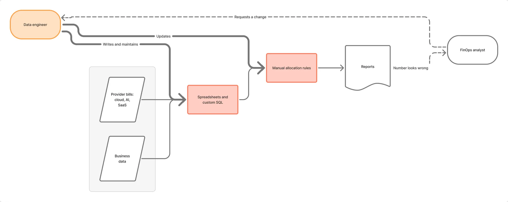
Where the workflow broke down
- Scattered inputsImportant business metrics often sit outside provider billing exports.
- Engineering dependencyEven small changes to allocation logic can require SQL support.
- Limited visibilityUsers struggle to see how costs move through each calculation.
- Hard to auditWhen a number looks wrong, tracing it back to the rule that produced it is difficult.
FinOps analyst
Responsible for understanding and explaining cost distribution across products, customers and business units, while keeping allocation models accurate and up to date.
Complex logic, without a data engineer.
How might we let FinOps teams build multi-step allocation logic, validate it and trust the output, without relying on spreadsheets, disconnected configuration screens or constant engineering support?
Complexity vs. usability
Expose datasets, calculations and relationships without overwhelming users with implementation details.
Flexibility vs. structure
Support organisation-specific allocation logic while keeping workflows consistent and manageable.
Transparency vs. trust
Help users understand how costs were calculated, what changed and whether a rule produced the expected result.
Design objective
Create one environment where FinOps teams can prepare data, build multi-step allocation logic, validate outputs and manage changes with confidence.
The data the bill doesn't have.
Before designing the builder, I worked on the data model underneath it. Allocation depends on more than billing exports, so users needed a consistent way to bring business data into OneLens and prepare it for calculations.
Things that receive cost
Products or lines of business that become the rows of the output report.
Dimensions used in rules
Customers or other business dimensions that rules can split or filter by.
Relationships between entities
ID pairs such as Customer → Product, with effective dates when relationships change over time.
Usage and business numbers
Revenue, database size or cost drivers that determine how shared costs are distributed.
Transformed raw data
Cleaned and standardised data, such as normalised usage by customer, ready for allocation.

Decisions that shaped the dataset experience
- One list with healthShow each dataset's key, grain, input method, record count, owner and health status.
- Two ways to add dataSupport CSV/XLSX upload from a template as well as manual entry.
- Upload first, fields secondLet users start with a file and review suggested metadata.
- Reuse existing dimensionsUse dimensions and cost centres already available in OneLens where possible.
- Time-aware relationshipsEffective dates let mappings change without rewriting historical periods.
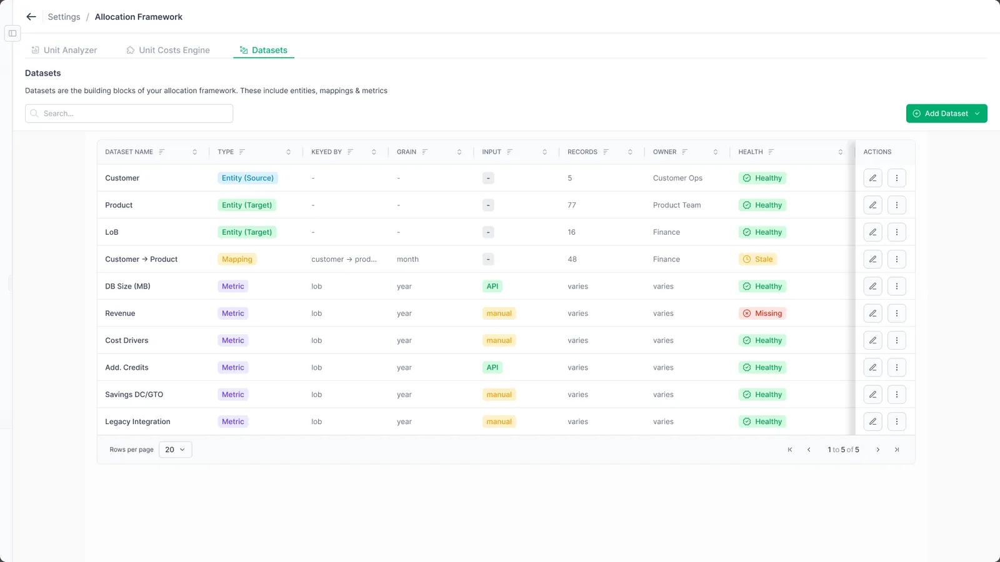
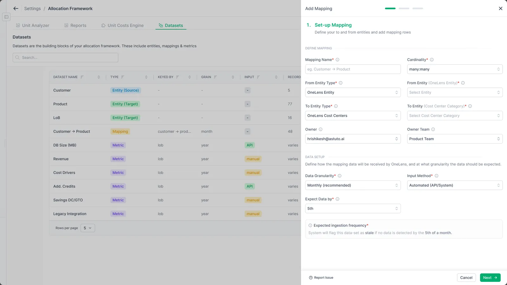
From a guided wizard to a visual canvas.
An allocation rule has several stages: which costs are being allocated, which inputs contribute, and how the results flow into the final report. My first approach was a guided, four-step wizard.
- Targets and contributorsChoose the primary target and add datasets, cost centres and other inputs.
- Report computationDefine calculation rules, each producing a column in the output.
- Fallback policiesDecide what happens to costs that no rule catches.
- Dry runPreview the output before saving or publishing.
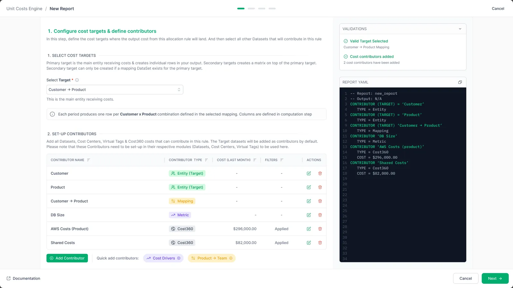
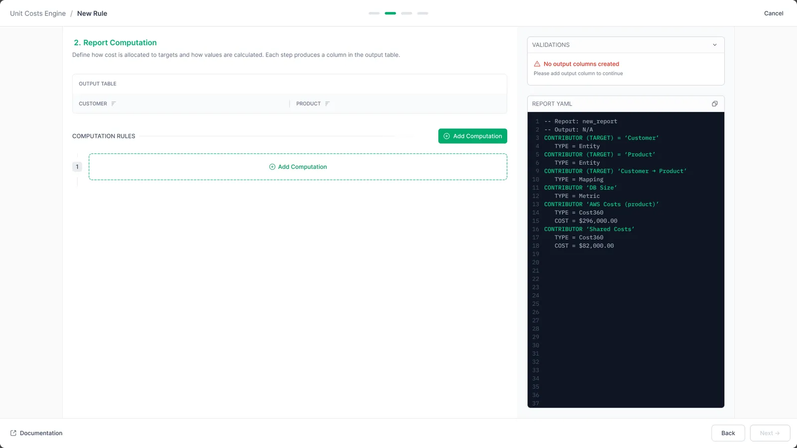
The wizard made the workflow linear. The problem wasn't.
The wizard worked for straightforward rules, but real allocation logic often needed intermediate tables. A result from one calculation could become an input to another. Users needed to understand those relationships across the workflow, not just complete one step at a time. The YAML panel helped technical users inspect the rule, but it exposed implementation rather than explaining the logic to finance users.
Exploring the in-between
The missing piece was a working table: a place to combine inputs, transform them and pass the result into another stage. Once tables could feed other tables, a linear wizard no longer represented the system well.
I explored a seven-stage flow for creating a working table: create it, define its purpose, build its structure, connect contributors, add safeguards, write or generate SQL, and test it against real data.
-
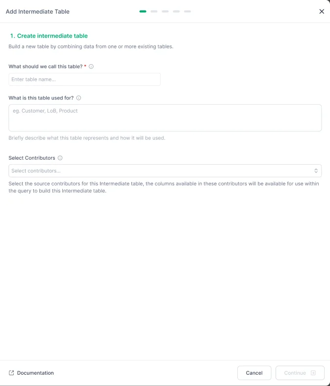
Step 1 of 7Create the table
Name the working table, say what it's for, and pick the contributors whose columns it can use.
-
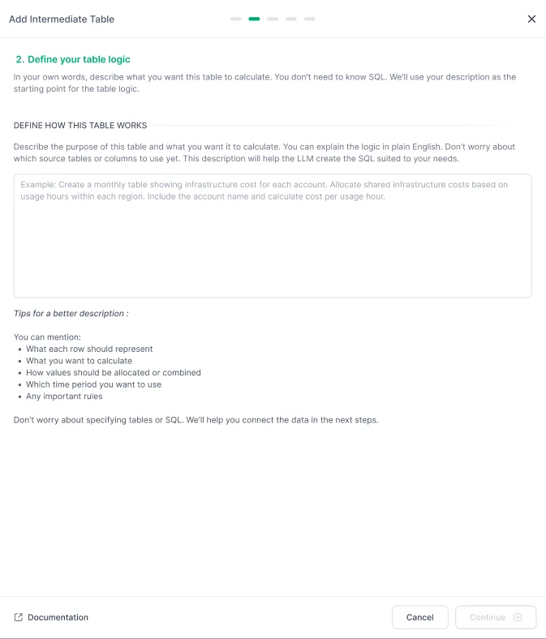
Step 2 of 7Define the logic
Describe in plain English what the table should calculate. No SQL needed: the description becomes the starting point for the logic.
-
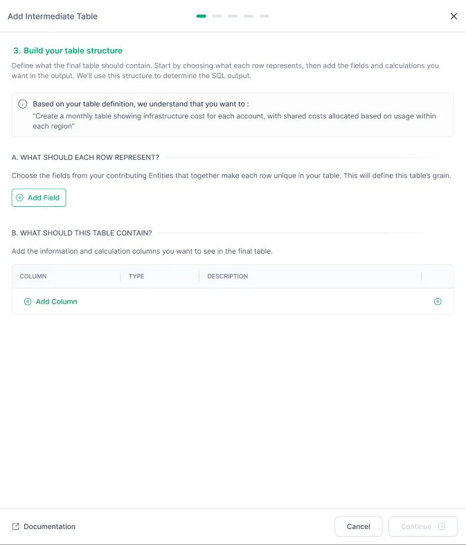
Step 3 of 7Build the structure
Choose what each row represents, the table's grain, then add the columns and calculations the output needs.
-
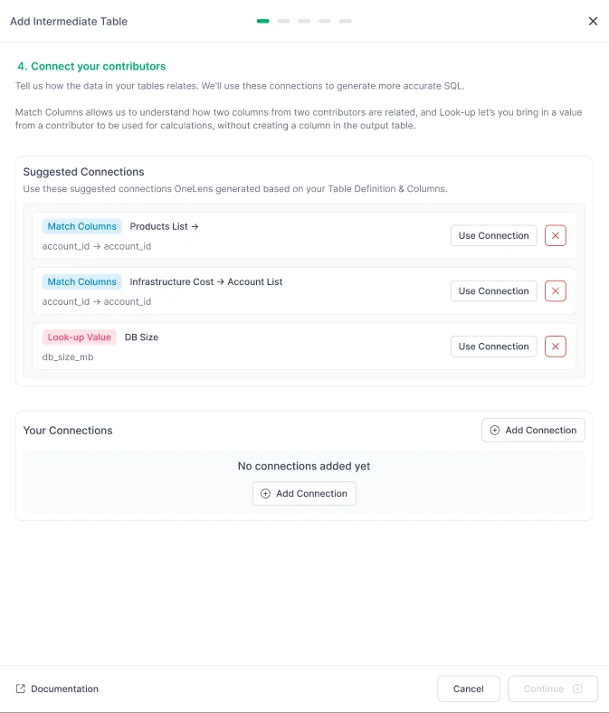
Step 4 of 7Connect contributors
OneLens suggests how the sources relate, by matching columns or looking up a value. Users accept a suggestion or add their own.
-
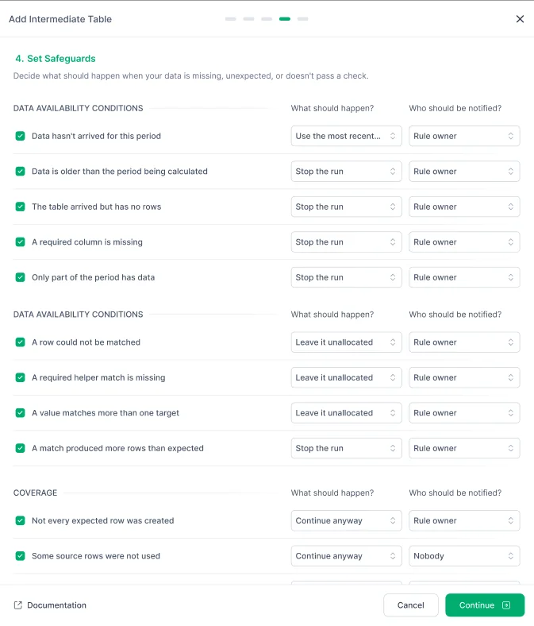
Step 5 of 7Add safeguards
Decide what happens when data is missing, late or doesn't match, and who gets notified.
-
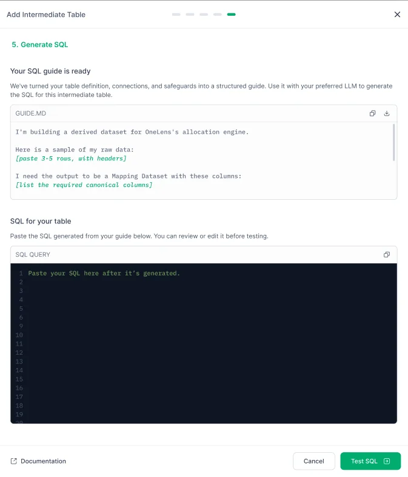
Step 6 of 7Generate SQL
Everything so far becomes a guide to hand to an LLM. Users paste the SQL it returns and can review or edit it.
-
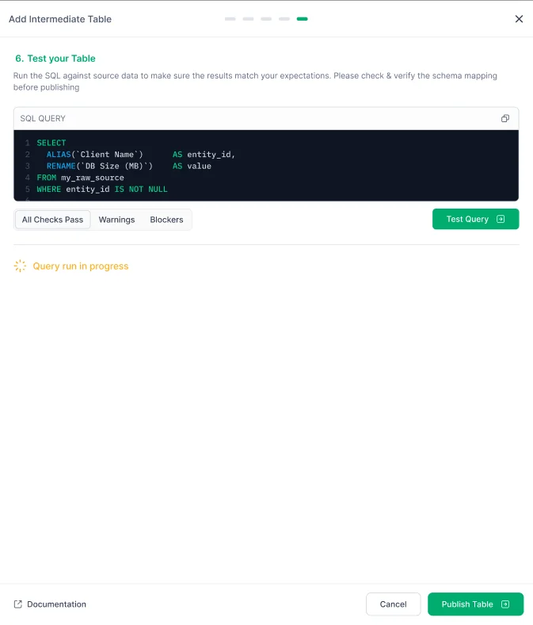
Step 7 of 7Test and publish
Run the SQL against source data, check warnings and blockers, then publish the table.
Choosing the right entry point
I also explored ways to add a working table: from the toolbar, from an empty column, from an existing node, and through a question-led prompt.
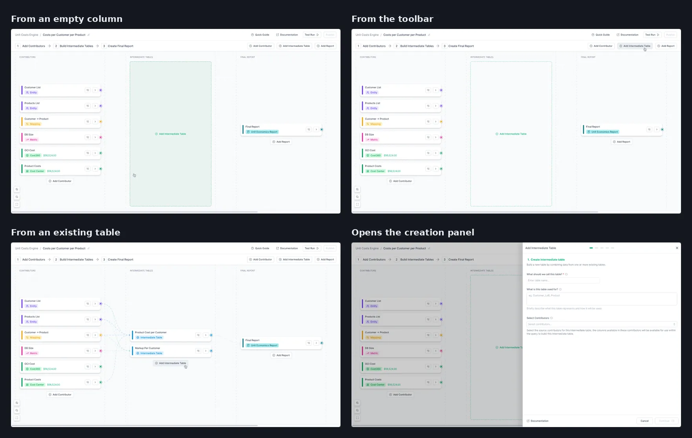
The logic, on one canvas.
The canvas lays allocation out from left to right in three stages: contributors, working tables and the final report. Every input, table and output is represented as a node; connecting lines show what feeds what.
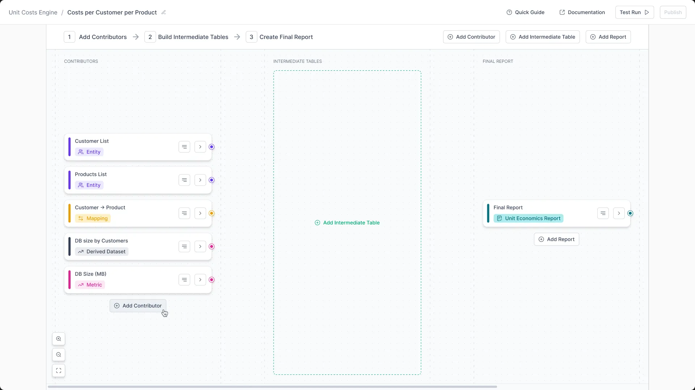
Prepare the data
Bring entities, mappings, metrics and cost inputs into one managed dataset layer. Surface data health and metadata before a rule uses the input.
Build allocation logic
Connect contributors, create intermediate working tables and define how costs flow into the final unit economics report.
Transform and validate
Use derived datasets, SQL transformations and AI-assisted query generation to prepare data and test calculations before they run.
Analyse and manage
Explore allocation reports, compare versions, group and filter by business dimensions, and understand how costs roll up through the hierarchy.
Keeping the canvas readable, with depth one click away
Nodes communicate contributor type and relevant cost context at a glance. Selecting a node opens a side panel for its definition, structure, connections, safeguards, SQL and test results. The canvas stays focused on the overall flow while detailed configuration remains accessible when needed.
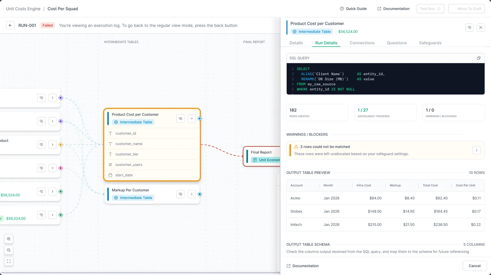
Making data transformation accessible
Derived datasets let users standardise inconsistent source data before it enters an allocation rule. Users can define transformations, map values to standard entities, normalise metrics and preview the result.
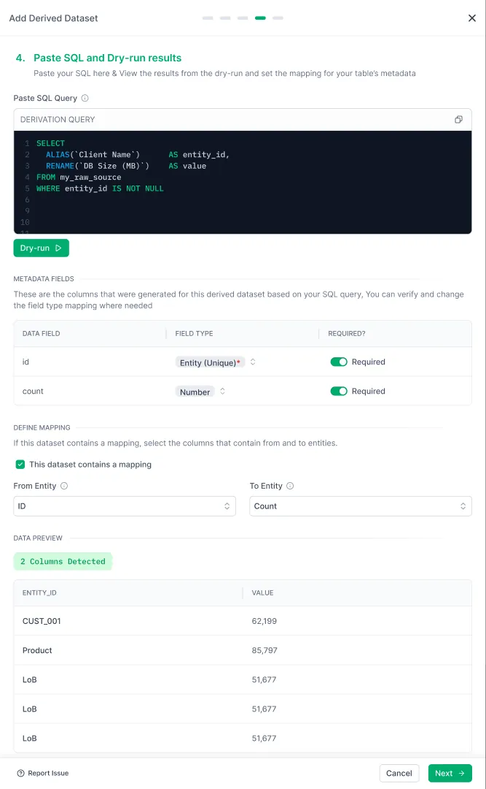
Lowering the SQL barrier
For users who don't write SQL, the AI-assisted query flow turns a plain-language description into a starting query. Technical users can inspect, edit and test the generated SQL before it runs.
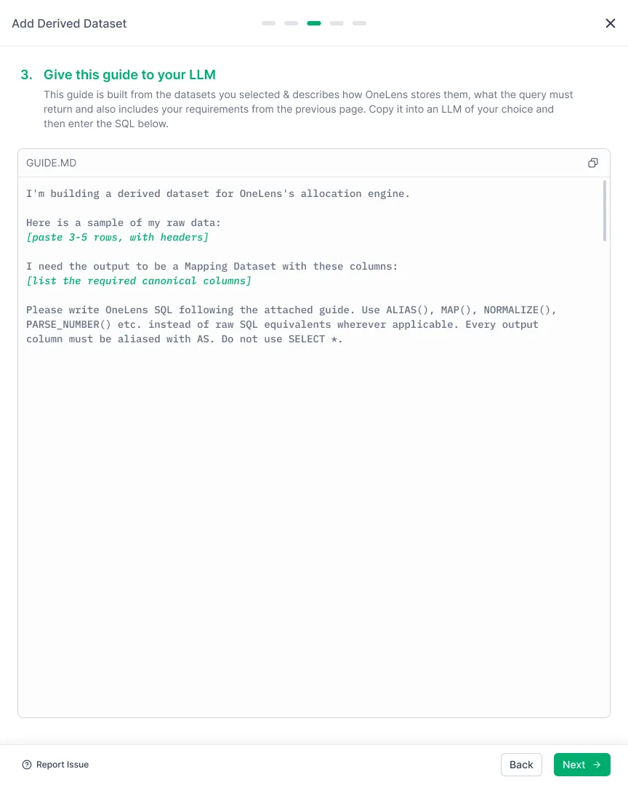
From allocation to analysis
The analytics view turns allocation outputs into charts and tables. Users can compare columns, group and filter by dimensions, switch report versions, save views and add report widgets to dashboards. Hierarchy management shows how costs roll up across the business.
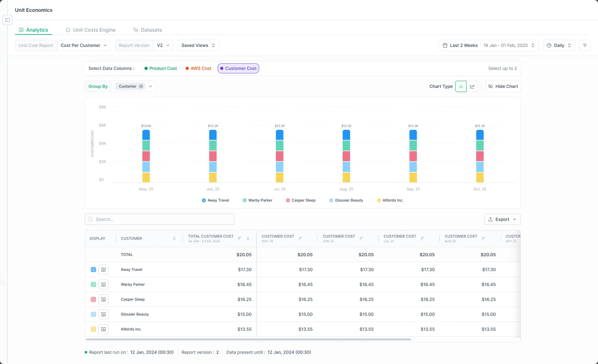
Knowing which rule made which number.
Allocation frameworks change as businesses change. When a finance lead asks why cost per customer increased, they need to trace the report back to the rule and configuration that produced it.
Draft and published
Distinguish working configurations from rules that are live.
View and edit
Inspect a rule without risking an accidental change.
Change log and revert
See who changed what and when, with a controlled way to return to a previous version.
Report versions
Connect a report output to the version of the rule that generated it.
Execution logs
Inspect run status and timing to understand whether an allocation completed.
Meaningful names
Name rules and reports so they're easier to find in logs and history.
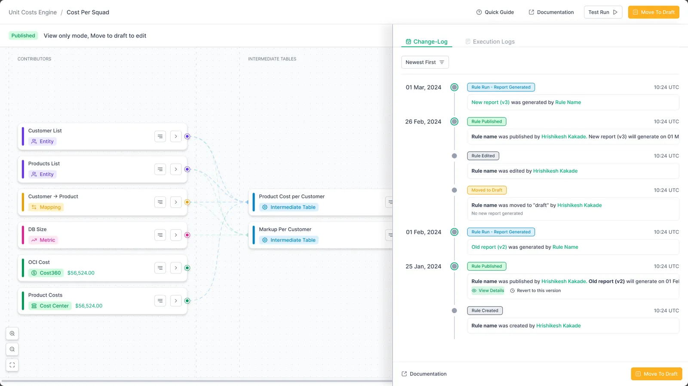
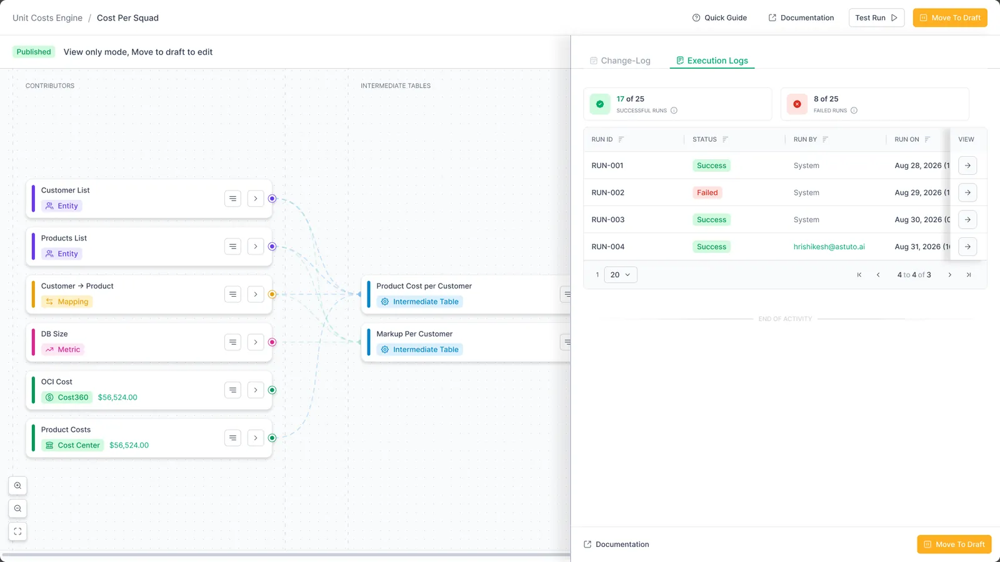
One framework instead of six disconnected parts.
The engine brought together dataset management, a visual rule builder, SQL-based transformations, AI-assisted queries, versioning and change tracking, and allocation analytics with hierarchy management.
A connected framework
Six capabilities brought together around one allocation workflow.
A shared visual model
Five data building blocks feed a canvas that makes dependencies visible.
More user control
Configuration, validation and governance are available in one environment.
The larger challenge was making these capabilities feel like one product around a demanding financial and technical workflow. The work extended beyond individual screens: it required designing the relationships, states and interactions that connect them.
Complexity can't always be removed. It can be organised.
The right abstraction matters
Complex workflows don't always need fewer steps. They need a structure that reflects how users understand and work with the system.
Data architecture is product design
Decisions about relationships, dependencies and information structure directly influence how usable a data-heavy product can be.
Trust belongs in the workflow
For products that inform financial decisions, validation, versioning and traceability are core parts of the experience.
Flexibility needs boundaries
Giving users more control doesn't automatically make a product easier to use. The challenge is exposing flexibility progressively.
Bringing allocation closer to the way the business is structured.
In progress · not yet shippedA third version of the experience is currently in progress. The next iteration will connect advanced allocation more deeply with OneLens' existing hierarchy and cost-centre system, while making conversational assistance a more integrated part of the product.
Advanced allocation meets business hierarchy
The next version will bring the advanced allocation workflow together with the hierarchy and cost-centre capabilities already available in OneLens. This should make it easier to align allocation logic with how an organisation is structured, and understand how costs flow across its levels.
From external LLM dependency to an in-product experience
The experience is also moving towards a more capable, chatbot-forward interface built into OneLens. Rather than sending users to a separate external LLM experience, conversational assistance will sit closer to the data and allocation workflow, helping users work through tasks in context.
What this could unlock
- More consistent allocationConnect allocation rules to the hierarchy and cost-centre structure teams already maintain.
- Better contextHelp users understand where an allocation sits within the wider organisation.
- Less workflow switchingBring conversational guidance closer to the data, configuration and actions it helps users with.